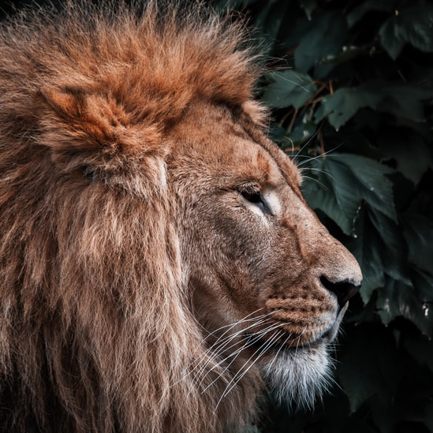

Colabore com a fauna silvestre
O que podemos fazer para preservar?
Em primeiro lugar, deve-se combater a ilegalidade no comércio dessa fauna, com isso, evite a compra de uma animal sem a liberação do IBAMA. Se você já possui um animal silvestre, é importante prezar pela saúde do mesmo, qualquer sintoma diferente, procure um profissional para examinar seu amigo.
→
Girafas
As girafas são herbívoras, alimentando-se, assim, de folhas, caules e frutos.
Tubarões
Alguns tubarões alimentam-se de animais grandes, como outros peixes.
Bicho-preguiça
A preguiça são arborícolas, com hábitos diurnos e noturnos e herbívoros.
A prática ilegal é crime!
Animais silvestre de estimação
Um dos mais lucrativos comércios ilegais do mundo é o tráfico de animais, que movimenta aproximadamente 20 bilhões de dólares por ano. Por esse motivo, aconselhamos que, caso queira um animal silvestre de estimação, procure saber a procidência, e caso desconfie, denuncie!

@gnt_official
Leão
Conhecido como o Rei da Selva, o leão pode ser encontrado na Ásia, África e Europa.
Alce
O alce é um mamífero de grande porte que habita regiões frias do hemisfério norte.
Rinoceronte
O Rinoceronte é um mamífero herbívoro encontrado na África e Ásia que apresentam pele grossa e cornos muito visados comercialmente.